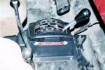
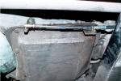

{kind=link}
{kind=link}

|
|
|
| [an error occurred while processing this directive] | Short Cuts | |
|
|
||
By: Terry L. Howe - 1/2002
|  |
| The Art Carr shifter installed with all the gates intact. |
|  |
| The shift linkage on the Art Carr shifter. This cable operated shifter hangs down by the transmission pan. |
|
|
| The shifter with one gate cut out. |
If you've seen the latest Big Rock video from the ARCA finals in Farmington New Mexico, you've seen a lot of roll overs. There are also some amazing saves in there. In several of the roll overs, the drivers attempt to shift into reverse when the front tires come off the ground, but they miss shift or shift too late. Some of the rolls probably could not have been saved, but some could of been saved if the driver was able to shift correctly and shift quicker.
This ability to shift quickly has interested me since I rolled on "Black Widow" out in the Rock Garden of Farmington, New Mexico. I'm not sure if I would of saved the roll, but I hit park instead of reverse and blipped the throttle. That didn't help.
I was using a Daytona cheap-o-shifter that ran me about $45. It is completely ungated except it locks in park. Well, it used to lock in park, but the pin sheared and it didn't even do that anymore. Anyway, when trying to shift quickly with this shifter, you always have to count the clicks you feel from the transmission to guess which gear you are in. It isn't easy to do if you are in a hurry.
To solve the problem, I purchased a cable operated shifter from Art Carr Performance Products. This shifter is very durable and all the gates in it are created by the shifter cover. I installed the shifter and used a cut off wheel to remove the gates that I didn't want. The first time around, I only removed the gate between neutral and third. This was pretty good, and you can see the picture of the shifter with the gate removed on the lower right, but a month after that, I also cut the gate out between second and third. With these two gates removed, I can shift very quickly between first and reverse.
I have not needed to test it to see if it really works, but I really like the way it shifts between first and reverse. When you are four wheeling, this always seems to be the shift you are making and I can really slam gears with no missed shifts. The only thing I didn't like about the Art Carr shifter over the Daytona shifter is the way the linkage ties in. The cable is nice and beefy, but the cable comes in from the bottom where as the Daytona shifter had a rod that come in from the top. You don't have to worry about hitting the rod at all, but the cable bracket and shifter hanging down which is not as nice. Fortunately, in first gear, the arm on the shifter is all the way back, so for normal four wheeling, it is not likely I will hit the arm.
This set up would work a bit better for a Jeep with a drivers drop transfer case, but I have a passenger drop transfer case. The front drive shaft and transfer case would help protect the shift linkage if I had a drivers drop transfer case, so it would be less of an issue. Either way, I have not hit the linkage yet.
On the right is a picture of the linkage. It doesn't hang down lower than the pan on my TH350, but it is slightly exposed. I don't have a skid plate under my transmission, just a piece of 3/16" steel welded to the transmission pan.
Installing the shifter body was super easy. Since it is a cable operated shifter, you can put it where ever you want. I just screwed the shifter body down on my tunnel cover. The shifter body covered up the hole I had for my old Daytona shifter.
So, if you get a chance to watch the Big Rock video from Farmington, keep quick shifts in mind. Watch Matt Peterson in his yellow CJ-7 go over backwards, he hits neutral and revs the engine. Matt has a column shifter. Watch Shannon Campbell on the same obstacle do a wheel stand and jam it in reverse, he saves it. I'm pretty sure, but not positive, that Shannon has an Art Carr shifter. To be fair to Matt, I don't think he would of saved it anyway, but at least he would of hit reverse when he tried. With the Art Carr shifter, I know I'll get the right gear and I'll get it as quick as I can shift it.
| Contacts: |
| Related Information: |